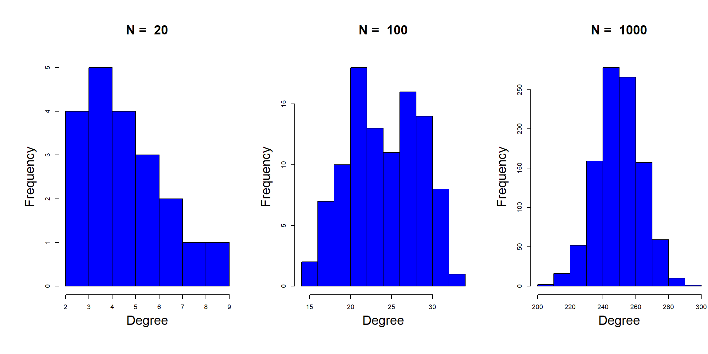
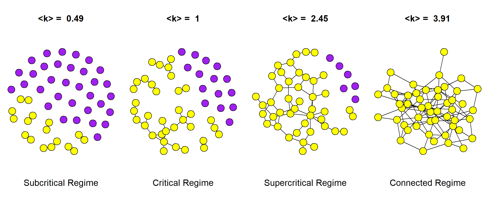
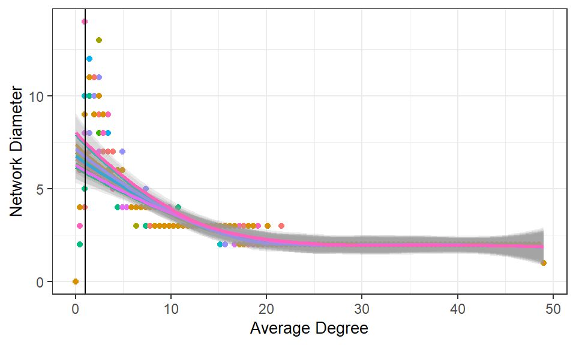
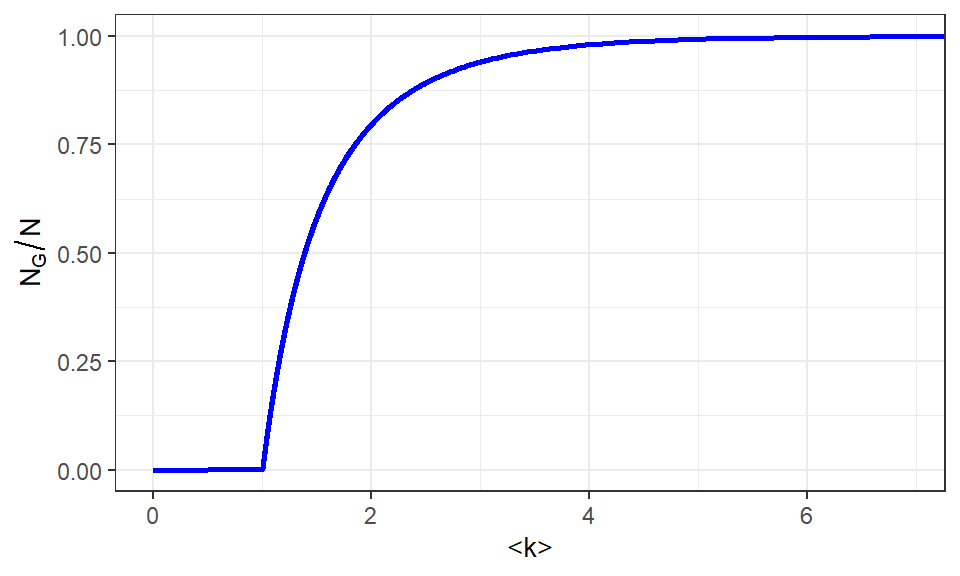
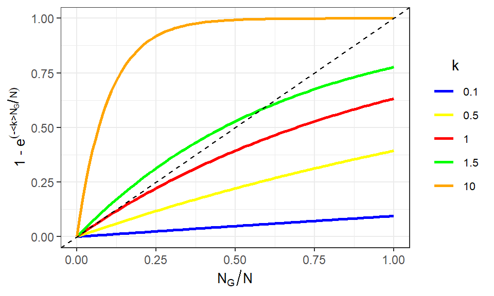
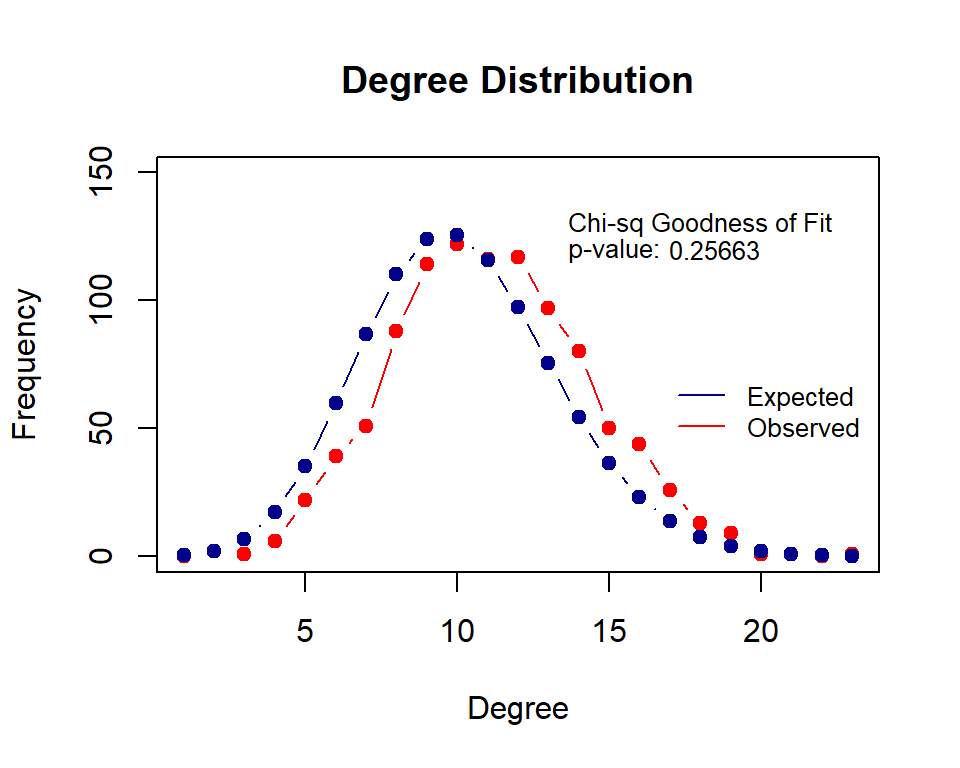
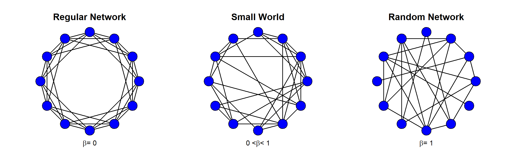
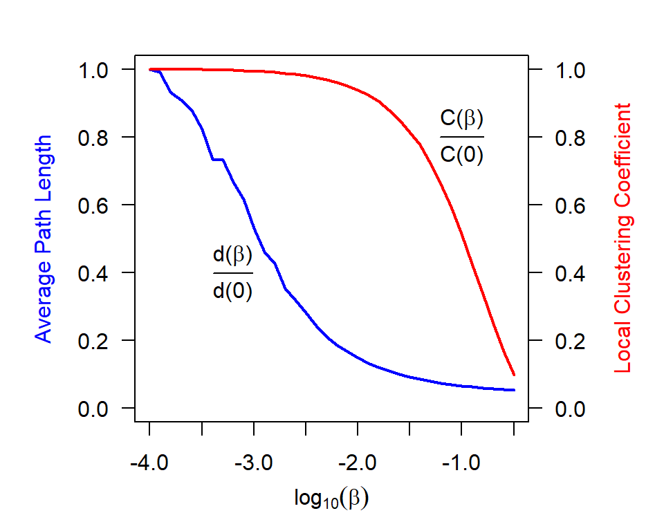
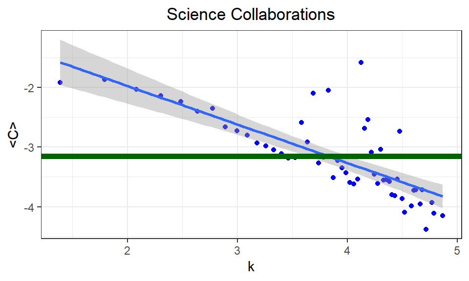
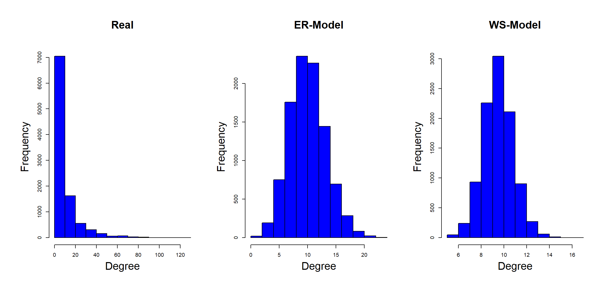

Let’s begin with a series of models that, although not fully realistic, let us take the first steps into the mathematical description on how are networks created. We wil use a very simplified notion on the nature of the connections, namely, that the connections between the different actors in a network are formed randomly. We obviously know that this is not right for real life networks but, however, it will return accurate predictions for some f the relevant network measures.
These models can be classified in two main families which are completely equivalent and only differ in the way we describe the structures
Both models describe the same type of network connectivity but in each of them the computation of some properties is easier than in the other. In any case, since the ER implies that the number of links is fixed while in the SR this is not the case since what is fixed is the probability of a link, we will always use this second model for our formulations.
In igraph both models are considered under the same function random.graph.game() where the second and third argument will return one model or the other, for example, if we want to define a ER model \(G(N,L) = G(100, 125)\) we would write
and the 125 links would be placed randomly between the 100 nodes. If, on the other hand we want to define a SR-model \(G(N,p)=G(100, 0.3)\), we may do
and know we do not have a fixed number of links, just the probability that each link may be formed with a 0.3 of probability.
Note that in the literature this class of models are generally known as the Erdös-Renyí model since they fully developed them in a complete series of papers. Then in igraph we can the previous function as the erdos.renyi.game() function with the same options.
Remember that the degree distribution is the probability distribution that returns the probability that a given actor has \(k\) connections. In order to find it we need the following data:
We also know that the maximum degree that any node can have is \(N-1\), always assuming that there are no loops. Now, take any node, say the \(i\)th one, and consider its connections to all the other links. Let’s write a \(1\) if there exists a connection and \(0\) if it does not, then we may find the following sequence
\[\begin{equation} \underbrace{\begin{array}{ccccc} 1 & 0 & 0 & \dots & 1\end{array}}_{N-1} \end{equation}\]
since the order in which we read the network nodes is irrelevant, we may consider all the connected nodes at the beginning and all the not-connected nodes at the end of the sequence, having the following structure
\[\begin{equation} \underbrace{ \underbrace{\begin{array}{cccc} 1 & 1 & \dots & 1\end{array}}_{k}% \underbrace{\begin{array}{cccc} 0 & 0 & \dots & 0\end{array}}_{N-1-k}}_{N-1} \end{equation}\]
since the existence of one each link is independent of all the others and it is created with probability \(p\), the probability of the previous sequence is \(p^k(1-p)^{N-1-k}\). On the other hand, we can also see that there will be \(\begin{pmatrix} N-1 \\ k \end{pmatrix}\) of these sequences, then we can write the degree distribution as
\[\begin{equation} P(K=k)=\begin{pmatrix} N-1 \\ k \end{pmatrix}p^k(1-p)^{(N-1-k)} \end{equation}\]
which is nothing more than the usual binomial distribution. Let’s see the histograms of the degree distributions for a link probability of 0.25 and network orders 20, 100 and 1000

Therefore we expect the usual behavior for the distribution, namely, if \(p\) is close to 0 or 1, we will have a left (right) skewed distribution while if \(p\) is around 0.5, the distribution will be symmetric. To this we must add a modification with respect to the number of nodes: no matter the probability, if \(N\) is large enough, the distribution will be symmetric. In particular, if \(N\) is large and \(p\) is small, so that the product \(Np\) remains constant and small, we can approximate the binomial by a Poisson distribution.
This approximation implies that the probability of connection \(p\) is small or, if you prefer, when \(<k>\ll N\), which is ok since real networks are sparse. Of course, this approximation would not be right in a dense network! In this situation we can write
\[\begin{equation} P(K = k) = e^{-<k>}\frac{<k>^k}{k!} \end{equation}\]
remember that in a Poisson distribution the parameter is the mean of the distribution. In this case this corresponds to the product \((N-1)p=<k>\), the usual expected value for the binomial distribution.
The fact that we can work with a Poisson distribution in certain limits makes the computation of some quantities rather straightforward, then for example
| Measure | Binomial Distribution | Poisson Distribution |
|---|---|---|
| Mean | \((N-1)p\) | \(<k>\) |
| Variance | \((N-1)p(1-p)\) | \(<k>\) |
| Standard Deviation | \(\sqrt{(N-1)p(1-p)}\) | \(\sqrt{<k>}\) |
and, even better, the Poisson distribution does not depend on the order of the network, \(N\), and so its functional form is blind to the fine grain details of the network!
As a first step in this section, let’s find the average number of links of any node in a random network. Remember that in an undirected network the sum of the degrees is twice the number of links, then we can just write that
\[\begin{equation} <k>=\frac{2<L>}{N} \end{equation}\]
since the average degree is just \(p(N-1)\) we find
\[\begin{equation} <L>=\frac{pN(N-1)}{2}=pL_{max} \end{equation}\]
Now, if we remember that the local clustering coefficient is the number of links of each node divided by the maximum number of links, we can find the average clustering coefficient as
\[\begin{equation} <C>=\frac{<L>}{L_{max}}=\frac{pL_{max}}{L_{max}} = p \end{equation}\]
this result is general for any random network: the average clustering coefficient is equal to the linking probability. And even more, this is true for the global clustering coefficient.
The expression for the average path length can also be obtained analytically, however, the proof is not as straightoforward. In this case we can write
\[\begin{equation} <d>=\frac{\log N - \gamma}{\log <k>}+\frac{1}{2} \end{equation}\]
where \(\gamma\) is the Euler’s Constant (do not confuse it with the Euler’s number \(e\)!!)
Let’s load the datset for the collaborations in ArXiv in the Theoretical Phisics branch
since we can identify the size and the order
we can generate a random network with those precise values (it’s true that since it is a randomly generated network, the values we compute may be slightly different in each case, however, the differences will not be significant for the purposes of our comparison)
The summary we want is going to be composed by: average degree, average path length and clustering coefficient
| Network | Average_Degree | Average_Path_Length | Average_Clustering_Coefficient |
|---|---|---|---|
| Real | 10.52364 | 5.945216 | 0.2839997 |
| ER-model | 10.52364 | 4.169048 | 0.0011425 |
We can compare the results in the table with the ones we may obtain using the analytic formulas, then
| Quantity | Exact | R |
|---|---|---|
| Average Path Length | 4.1627548 | 4.1690481 |
| Average Clustering Coefficient | 0.0010656 | 0.0011425 |
So the R functions produce a rather accurate and precise result.
We have compared just one simulation with a real network. However, ther results we find can be easily seen to be a general pattern: In a random network the average path length will always be correctly estimated, however, the average clustering coefficient will always be significantly smaller.
This means that using random networks we may estimate how far are nodes in a network, however, since the connections in real life are not random, this model cannot properly account for this feature of a real network and will always underestimate the percentage of nodes to which each node is connected: in our case \(0.1\%\) compared to the true \(28.40\%\).
An interesting property of a random network is that once it is set, all the nodes will have, roughly, the same degree and all of them will be close to the average degree. To find out which are the upper and lower natural cutoffs we will simply impose that these correspond to the values such that there is at most one node with a higher degree and at most one node with a smaller degree. Since we have \(N\) nodes, the probability for such node is \(1/N\), then
\[\begin{equation} 1- F(k_{max}) = \frac{1}{N} \end{equation}\]
and
\[\begin{equation} F(k_{min}-1) = \frac{1}{N} \end{equation}\]
we may use the Poisson distribution to obtain analytical results for these values, however, since each of them correspond to the inverse survival and to the percentile, respectively, we may directly use R to obtain these values.
Suppose that we are given a network with \(N=10^6\) and \(\langle k\rangle =1,000\), then
N <- 10^6
k <- 10^3
k_min <- qpois(1/N, k) + 1
k_max <- qpois(1/N, k, lower.tail = FALSE)
cat(sprintf("Maximum Degree: %5.0d\nMinimum Degree: %5.0d", k_max, k_min ))## Maximum Degree: 1154
## Minimum Degree: 854Then, as we see, with a network with one million nodes and an average degree of one thousand, the degre of the nodes moves from \([854, 1,154]\).
If we begin with \(N\) isolated nodes and place \(L\) links between them, we are generating a dynamical process in which the average degree of the network is changing from 0 when all nodes are isolated to \(N-1\) when we have a clique.
We can see this process in the following picture

where we have a network with 50 nodes and have selected four different moments with increasing <\(k\)>.
Along the process we can identify four different regimes, denoted as subcritical, critical, supercritical and connected. We will explain each of them now, however, it is important to point that the critical regime, occuring at <\(k\)>\(=1\), is a very special case since at that moment a phase transition occurs and a Giant Component is formed in the network.
We must be very careful making a difference bewteen the largest and the giant component of a network. We define a giant component as a component whose size grows proportional to \(N\), otherwise it may just be a large component.
The following graph shows the dependence of the diameter of the network as a function of its average degree for a series of five different seeds in the generatino of random networks.

We can identify that around <\(k\)>\(=1\) we obtain the maximum diameter and this decreases as we increase the degree. This is another indication of the aforementioned phase transition.
In order to understand the phase transition, let’s denote by \(u=1-N_G/N\) the fraction of nodes which do not belong to the giant component, and \(s=1-u\) to the fraction of nodes in the giant component. Then, we can see that there are two possibilities for any node to be in \(u\): either it is not connected to any other node or it is connected to a node not in the giant component, then we can write
\[\begin{equation} u = (1-p-pu)^{N-1} \end{equation}\]
solving for \(s\) we find that that the fraction of nodes in the giant component satisfies
\[\begin{equation} s = 1-e^{-<k>s} \end{equation}\]
which is a highly non-trivial equation and whose solution can only be found in term of the Lambert-W functions. However, we can plot the dependence of \(s\) with <\(k\)>

from where we clearly see that there is no giant component before <\(k\)>\(=1\), as expected.
This is the regime where <\(k\)>\(<1\) or \(p<1/(N-1)\). In this regime there are different trees formed by a small number of nodes.
This regime occurs at <\(k\)>\(=1\) or \(p=1/(N-1)\). The following figure represents a different graphical inspection of the equation for the giant component size. In it we have the diagonal dashed line for \(y=s\) and all the other lines are the family \(1-e^{<k>s}\) for different values of the average degree.

For any value of <\(k\)> we have a solution at \(s=0\), i.e. with no giant component. However, the value <\(k\)>\(=1\) is the last in which we only have that solution and other values of \(s\) appear from there on, for example the value \(s=0.583\) at <\(k\)>\(=1.5\). This is precisely indicating the growth of a giant component of order \(N_G\).
The solution of the equation can be found when the gradient of both sides is equal. In this case we find
\[\begin{equation} <k>e^{-<k>s}=1 \end{equation}\]
which, when \(s=0\) has as solution <\(k\)>\(=1\). Which, again, implies that the network can have a giant component only when <\(k\)>\(>1\), while at <\(k\)>\(=1\) and below we have \(s=0\)
This is the case in which <\(k\)>\(>1\), or \(p>1/(N-1)\), but up to a value to be determined in the next section. To understand this regime think of a node and pick all its neighbors. We will denote this set as the core, then take a set of nodes which have at least one neighbor outside the set and denote it as the periphery, then we may think of enlarging this set as much as we can. The number of nodes in this component can be denoted as \(N_G\), then the number of nodes which are not in this set is \(N-N_G\).
The average number of connections of any of these nodes is still <\(k\)>, then
\[\begin{equation} p(N-N_G) \approx <k> \end{equation}\]
and so, increasing the periphery to the new level multiplies the size by <\(k\)> implying an exponential growth. It is this growth which determines that we have a giant component in this regime.
If we keep on increasing the value of the average degree, there will be a moment in which the expected number of nodes not connected to the giant component is
\[\begin{equation} N(1-p)^{N_G} \simeq N(1-p)^N \end{equation}\]
since in this case \(N_G\simeq N\). The last step is when there is only one node isolated from the component, this means that
\[\begin{equation} 1 = N(1-p)^N \end{equation}\]
from where we can easily find that, in the limit \(N\to\infty\), the probability is
\[\begin{equation} p = \frac{\log N}{N} \end{equation}\]
or, written in terms of average degree
\[\begin{equation} <k>=\frac{(N-1)\log N}{N} \sim \log N \end{equation}\]
| Subcritical | Critical | Supercritical | Connected | |
|---|---|---|---|---|
| Probability | \(<\frac{1}{N-1}\) | \(\frac{1}{N-1}\) | \(>\frac{1}{N-1}\) | \(>\frac{\log N}{N}\) |
| Average Degree | \(0< \langle k\rangle < 1\) | \(\langle k\rangle = 1\) | \(\langle k\rangle > 1\) | \(\langle k\rangle > \log N\) |
| Giant Component | No | No | Yes | Yes |
| Structure | Trees | May have cycles | GC with cycles and trees outside | GC with cycles |
| Size of the Largest Cluster | \(\sim\log N\) | \(\sim N^{2/3}\) | \(\sim \left(\frac{\langle k \rangle}{N} - \frac{1}{N}\right)N\) | \(N\) |
The expressions for the clustering coefficient and the average path length are still valid for any regime (being careful with the meaning when we have different components)
For this section we are going to generate manually a random network \(G(N,p)\) with 1,000 nodes, but let’s act as if we were given a dataset named ex_random_net which is unkown to us and we have to analyse it.
set.seed(101)
ex_random_net <- random.graph.game(1000, 0.01, "gnp")
V(ex_random_net)$names <- 1:gorder(ex_random_net)
vertex_attr(ex_random_net, "label") <- V(ex_random_net)$namesThen, let’s proceed by finding the different elements of its EDA:
then we are going to determine:
Then we can find
| Density | Diameter | APL | ALC | GCC |
|---|---|---|---|---|
| 0.0101 | 6 | 3.2434 | 0.00998 | 0.0104 |
where APL is the Average Path Length, ALC is the Average Local Clustering Coefficient and GCC is the Global Clustering Coefficient. Note that we do not find the reciprocity because this is an undirected network. Now we can make a summary with the nodes with the highest centrality values
| Node | Degree | Betweenness | Closeness | Eigenvector |
|---|---|---|---|---|
| 225 | 0.022022 | NA | NA | NA |
| 225 | NA | 0.0088131 | NA | NA |
| 225 | NA | NA | 0.350035 | NA |
| 225 | NA | NA | NA | 1 |
which returns that it is just one node sharing the maximum value in all the centralities. You may complete this by making some plots (better if you export the graph to gephi).
From the summary of the EDA, we see a network whose Average Path Length is small but also has a very small value of the Average Local Clustering Coefficient, which is indicative of a basic ER-model. To complete this identification, let’s plot the Degree Distribution in order to see if it actually corresponds to a Binomial/Poisson like distribution.
In the graph we can see the the observed frequencies of each degree value and the expected frequencies in case we had a binomial distribution for 1,000 events and probability \(\langle k \rangle/(N-1)\)
kmean <- mean(degree(ex_random_net, loops = FALSE))
N <- gorder(ex_random_net)
p <- kmean/(N-1)
observed <- 1000*degree.distribution(ex_random_net)
expected <- dbinom(1:length(observed), N, p)
Xsq <- chisq.test(observed, expected)
As a final set of results:
is.connected returns TRUE, so we may assume that we are in the Connected RegimeSummarizing our resutls, we have what a random network in the connected regime with a small average path length and diameter, i.e. all the nodes are close to each other, but with a very small transitivity, i.e. due to randomness, triads are not transitive (only the \(0.998\%\) of them are). If this network where people with links of friendship, this implies that we may gain access to anyone easily, but friends of a person are not usually friends.
We have already mentioned the words Small Worlds, but to make it more precise, we say that a network is a small world when it has a small average path length and a large average local clustering coefficient.
This second effect, which we can see in real networks as a reflection of a high transitivity, is not present in the ER-model, then we need another perspective: the Watts-Strogratz Model.
Watts and Strogatz contructed not just one model but two based on the idea of introducing a continuous parameter that may interpolate between extreme models.
The \(\alpha\)-model, in words of Watts, represents a primitive attempt to capture the nature of connections in a social network. For this purpose they introduced a parameter, \(\alpha\in [0,\infty)\), which captures the balance bewteen the constraints of social structure and the freedom of individual agency. Then by finding the average path length and the clustering coefficient as a function of \(\alpha\) they were able to identify that:
Then this model shows that the network will either be fragmented into small clusters or will be in a single giant component.
The of the rewiring process is that at each step, for each of the links in the network a random number is generated and compared to the \(\beta\), then if the generated number is smaller than it, the link is removed and connected with probability \(\beta\) to any other node (avoiding repeated links and loops). Clearly, if the probability of rewiring is 0, we do not change the graph and stay in the regular newtork, however, the other limit is when \(p\) is 1, in which case every node has ben rewired and placed randomly, then we are in a random network. Everything that happens in-between is the small-world network.

Today, when we talk about the WS-model, we always refer to the \(\beta\)-model. This model comes with two main lessons:
This last lesson is what explains why small-worlds are so present in real networks. However, proving rigurously this result has shown as a really hard problem and at most, it has been demonstrated in easier variants of the original model.
In R we can define the WS-model using the watt.strogatz.game(sim, size, nei, p) function. In it we have:
dim, is the dimension of the starting latticesize, is the number of nodes along each dimensionnei, is the number of neighbors in the statrting latticep, is the rewiring probabilityThen, for example, to simulate a WS-model to be compared with the hep-th collaborations network we would do

Now, the behaviour of the average length path and the clustering coefficient is very interesting. The plot we have made contains the average values on 100 simulations of a network with 1,000 nodes, 3 initial neighbors and changing the rewiring probability continuously from almost 0 to almost 1. The result has been normalized by consdering the maximum values of the ALP and the CC.
as a function of \(\beta\) we see that on the left side (\(\beta=0\)) we have a high ALP and a high CC, while on the right side (\(\beta=1\)) we have a low CC and a low ALP. Note however, that since we have normalized, we do not actually see that the change in the VLP is not very significative, while it is for the CC.
It looks like the WS-model responds properly to some of the characteristics of real world networks. In fact, for the hep-th network of collaborations we can find the following summary table, where we have written the simulation as a ER-model and the equivalent with a WS-model (note that we have directly used the value of one single simulation and that results may change slightly if we increase this number)
| Network | Average_Degree | Average_Path_Length | Average_Clustering_Coefficient |
|---|---|---|---|
| Real | 10.52364 | 5.945216 | 0.2839997 |
| ER-model | 10.52364 | 4.169048 | 0.0011425 |
| WS-model | 10.00000 | 5.272705 | 0.3465666 |

However, WS-strogatz model is still a random network and then it suffers from the same problems as any other, in particular, we showed that the average clustering coefficient of a random network is the probability of the model, which implies that
\[\begin{equation} \langle C \rangle = \frac{\langle k \rangle}{N-1}\simeq \frac{\langle k \rangle}{N} \end{equation}\]
this implies that the if behaves as \(1/N\). However, it can be seen that for a family of real networks, the rate \(\langle C \rangle/\langle k \rangle\) is independent of \(N\). Not only that, as can be seen in the graph (in logarithmic scale), the clustering coefficient decreases with \(k\) in contradiction with the general result.
Finally, a major problem is that the shape of the degree distribution is completely different from that of a real network. This has been illustrated below with the hep-th collaborations network, however, it can be seen that this is a general property of real networks: their degree distribution follows a power-law distribution
